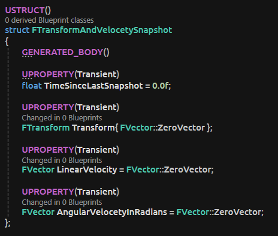

Details
- Genre: Puzzle
- Platform: PC
- Engine: Unreal
- Group Size: 12 Members
- Date: 2024
- Duration: 7 Weeks
- Roles: Rewind Programmer, Movement Programmer
Description
temple of Recall is a puzzle game where you rewind time of objects you have recorded
Recording

The recording stores the transform, linear velocity, and angular velocity as snapshots in one ring buffer.
When the ring buffer becomes full, it stops recording and freezes the object.
The snapshots that are saved contain the following information:
- Time since the last snapshot
- The object's position
- The object's linear velocity
- The object's angular velocity in radians
.png)
This is where the FTransformAndVelocetySnapshot struct gets saved into a ring buffer.
If the maximum number of snapshots is reached, the oldest snapshot is removed.
This process is somewhat redundant because, when it reaches that point, recording stops, and the object freezes.
Rewinding
The rewind goes through the items that are recorded in the ring buffer to rewind the objects to a previous position and removes the old position. When the ring buffer is empty and you have rewound all the way back, the object becomes deselected.
3.png)
It starts by checking if there are insufficient snapshots; if so, it returns.
If there are sufficient snapshots, time dilation is applied to the delta time.
Next, it drops any snapshots that are too old to be relevant.
It also removes snapshots that have the same transform, except for a few that are skipped by the buffer variable.
After that, it checks if there are any snapshots in the future; if none are left, it can't interpolate, so it just snaps to the latest snapshot.
If it has reached the end of the track, it clamps the interpolation and unselects the object.
Activation of main mechanic
The character activates the record and rewinds through the game mode which uses multicast delegates to activate the objects with the rewind component.
Selecting objects is done by grabbing objects that have the rewind component with a bounding box on the character and selecting them to be able to record and rewind.